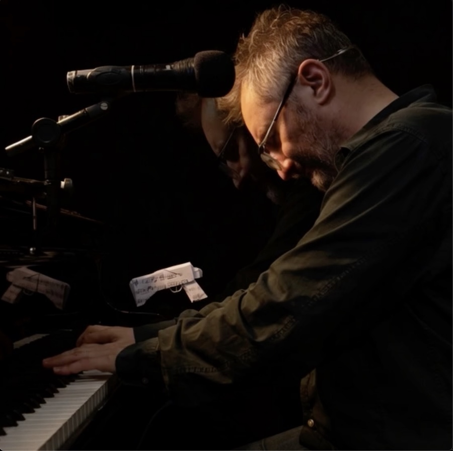

Paper Gun · A Show About Shadow Work
For presenters, clinicians, and group facilitators
Paul Tosh · tosh42.com · bookings@tosh42.com
Paper Gun is an original one-man operetta with a therapeutic purpose: to carry a room through the universal resentments — the ones that live rent-free in us — to the point where grief can finally do its work. The show moves the way healing moves: Complain → Regulate → Elevate. First the grievance gets its voice. Then the room settles. Then something lifts. Because resentment is grief still litigating — and what is properly wept for stops charging rent.
Paul Tosh is the creator of Paper Gun and author of the Grieving the Living protocol — a practical method for mourning a relationship with someone still alive, developed through lived experience and artistic practice, with guidance and alongside professional therapy, and offered here for clinical collaboration. Read the protocol →
Every performance is held in a professionally informed container: advance framing, a clinical partner for survivor-focused audiences, and a facilitated talkback. Read the care frame →
"… This Is Mine — But You Can Have It"
It's about survival rather than grievance. It's about how we have as much right to our truth as anyone has to their behavior — but the songs don't name, they don't accuse. They witness, they transform; into something that can heal, something redemptive. They draw on things I know closely, making them into something people can sit with has been the work.
It's about what we do with what we are given.
Take Away
The operetta embodies a process to help lead trauma survivors out of the self-punishing that they are left with. There is no circumstance where you cannot find pleasure in taking responsibility for your life.
What This Page Is
Paper Gun is an original one-man operetta in three acts about the inner dynamic of shadow work — material that many audience members, particularly survivors of psychological abuse, will recognize from the inside. That recognition is the show's therapeutic power, and it deserves a professionally held container. This page holds two things: a protocol from lived experience and artistic practice, offered for clinical collaboration — and a description of how each performance is framed, held, and closed, so that a clinician or presenter can book it with confidence.
The Protocol
A practitioner's protocol for mourning a relationship with someone still alive
by Paul Tosh · creator of the operetta Paper Gun · tosh42.com
This protocol comes from lived practice: undertaken with guidance and alongside professional therapy — and from twenty years of performing for audiences carrying losses that have no closure. It is offered to fellow sufferers and to the clinicians who treat them. Nothing here replaces therapy; much here may make it work better.
The premise: resentment is grief still litigating
Resentment and grief are the same loss in two states. Resentment keeps the case open — someone did this, someone owes, the account awaits settlement that never comes. Grief is the write-off of a debt accepted as uncollectible: not forgiven — surrendered. Chronic bitterness toward the living is usually mourning that was never permitted to start, because the person is still alive and hope keeps re-filing the claim. The rage does not fade into indifference; properly grieved, it melts into sadness — and sadness, unlike resentment, completes. Progress test: the grieving has succeeded on the day revenge becomes boring. Not resisted — uninteresting.
The two pains
"You hurt either way — why not stay in contact?" The pains are not symmetric. Contact-pain is corrosive: it does not merely hurt you, it replaces you — you see yourself through the other's eyes, and the damage compounds, degrading the very instrument that would recover. Distance-pain is clean: an amputation — love with nowhere to go — and it diminishes, because grief completes. One is a disease, one is a wound. Wounds heal; diseases progress.
The protocol
Loss of a living person lacks what mourning requires — an event, a date, a ritual, witnesses. Supply them deliberately: (a) a one-page eulogy for the good that was genuinely real — grief needs an object, and the page holds the quiet material the bitterness would otherwise drown out; read it briefly and regularly, though for those who process through dialogue and performance, conversation and expressive work may carry the active grieving while the page serves as anchor; (b) a sealed file — the complete record of harm, one's own wrongs included, written once at full voltage, then closed: visited only in therapy, never re-litigated at night (it doubles as a target list for trauma-focused work such as EMDR); (c) a bounded window — fixed start and end dates; boundedness is what licenses the psyche to stop; (d) a physical closing act — the page printed and put away, a composition, a stone: the body must register that a burial occurred; (e) one witness — grief unwitnessed barely registers as having happened; (f) clergy sanction where faith is live, converting private improvisation into authorized practice and answering the "reconcile at all costs" chorus; and (g) a means of expression — music, writing, art, prayer — as the enabling condition: the outlet is where the unsayable first reaches the front; those without one cannot begin, so building one is the first task.
Why expression alone was never enough
Expression — talk, art, catharsis, even tears — drains the reservoir but does not cap the spring: the relief is real and temporary, and the resentment refills between discharges. Only completed mourning caps the spring. The outcome measure is not the absence of sadness — the ache remains, visitable, for life — but whether the gaps between discharges stop refilling with prosecution. Crying, within the structure, is not breakdown; it is the loop finally running to completion. What is properly wept for stops charging rent.
None of this requires the other person to change, participate, or ever know. The love is not discarded — it is kept, resized to reality, and re-routed to where it can be received. Clinicians interested in developing this protocol into a formal case study are invited to write.
© Paul Tosh, August 2026 (Av 5786) · tosh42.com · developed alongside guidance and professional therapy · Paper Gun: a show about shadow work
01 · Before the Performance
Advance Framing
Your promotional copy can state plainly what the show explores; suggested content-note language is provided with the booking pack.
Clinical Partner
For survivor-focused audiences, a licensed clinician known to the group is present in the room — typically the facilitator who convened the audience. Their role and seating are agreed in advance.
02 · During the Performance
No Participation Required
No audience participation is ever required. The audience is never singled out, addressed individually, or asked to disclose anything.
A Deliberate Arc
The three-act arc moves deliberately from entanglement toward clarity and release — the evening does not end inside the wound.
Exits Stay Open
House lights are kept at a level that allows discreet movement; the host keeps sight of the room.
03 · After the Performance
Facilitated Talkback — Optional, Recommended
A 20–30 minute conversation co-held by Paul and the clinical partner — reflective rather than confessional, with the facilitator guiding depth.
Grounded Close
The evening ends with a musical decompression piece and a spoken close — not on the show's most intense material.
Resource Sheet
Every attendee can take a one-page sheet listing the host organization's own follow-up options plus national support lines — prepared with the presenter so it reflects your community's actual resources.
Caveats · Full Candor
Worth mentioning rather than editing the art in advance. Two points to be aware of, that as required I can soften:
"From a Living Grave" — Act Three
"From a Living Grave" sits in Act Three (The Emergence) and contains "past the point of buying a rope." The line means beyond despair, and the notes justify the descent-and-return. But regarding my promise that the evening "does not end inside the wound," this is a line you should know exists.
"Painful Bother"
"Inseparable from your nose and thumb" and "I hope I don't see you in hell" are the sharpest second-person jabs in the piece. They're defensible — it's a farewell between internal voices, N speaks first, and "just as sorry for what I'm not" self-implicates — but the dramatic frame holds.
The mandate and architecture hold and are genuinely delivered: This Is Mine (ownership, not victory), Let Me Cry (release), Paper Heart (the gift), and the notes' own framing that Act Three offers "clarity, release, and a realistic warmth" rather than triumph. That is precisely the shape of leading a survivor out of self-punishing without selling a fantasy.
Division of Responsibilities
◆ Paul Provides
The performance, the pre-show frame, the talkback format, and full technical self-sufficiency (rider available here).
◇ The Presenter Provides
The room, the piano, the audience, the clinical partner (for survivor-focused events), a quiet adjacent space, and local resource details for the sheet.
This frame was developed across two decades of therapeutic performance in senior communities, congregations, and community settings. It is adjusted with each presenter — the container belongs to the room.
Paul responds personally to every enquiry — availability, audience fit, the clinical partnership, and how the frame adapts to your setting.